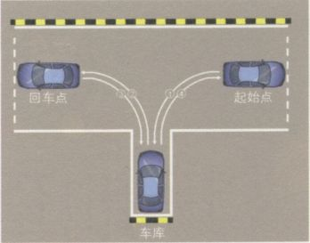

倒车入库
一、操作要求
机动车驾驶人应通过视觉和感觉及时判断坡道的坡度大小、长短及路宽等道路情况，采取正确的操作方法，控制车辆平稳停车和起步。做到转向正确，换挡迅速，操纵加速踏板、驻车制动器和离合器踏板的动作准确协调。要求在≥10%坡度，≥30米坡长的坡道上的固定位置停车，考察方向、制动、离合器三者的协调配合。

二、评判标准
 车辆保险杆未定于杆线上，前后超过1250px(以桩杆线的前后边缘起算)，不合格；
车辆保险杆未定于杆线上，前后超过1250px(以桩杆线的前后边缘起算)，不合格；
 起步时后溜大于750px的，不合格；
起步时后溜大于750px的，不合格；
 车头未在停车范围内(车辆保险杠未定于桩杆线上，前后不超过50厘米的(以桩杆线的前后边缘起算))扣20分；
车头未在停车范围内(车辆保险杠未定于桩杆线上，前后不超过50厘米的(以桩杆线的前后边缘起算))扣20分；
 车身未靠边停止在路边右边线750px以内的，扣20分；
车身未靠边停止在路边右边线750px以内的，扣20分；
 后溜<750px，扣20分。
后溜<750px，扣20分。
三、操作提醒
 如果坡起时车辆出现后溜的状况，不要急，立即踏下离合踩下刹车，并拉紧手刹，然后再按程序起步。如果来不及踩离合或上坡加油不够导致发动机熄火，不过就是重新发动车辆而已，不要胆怯，大不了从头再来。
如果坡起时车辆出现后溜的状况，不要急，立即踏下离合踩下刹车，并拉紧手刹，然后再按程序起步。如果来不及踩离合或上坡加油不够导致发动机熄火，不过就是重新发动车辆而已，不要胆怯，大不了从头再来。
 如果坡道不陡，并且后面没车，起步稍微后退也没有危险的情况下，可以不拉手刹起步，但是起步动作需要更加迅速。
如果坡道不陡，并且后面没车，起步稍微后退也没有危险的情况下，可以不拉手刹起步，但是起步动作需要更加迅速。
四、操作方法
右倒入库